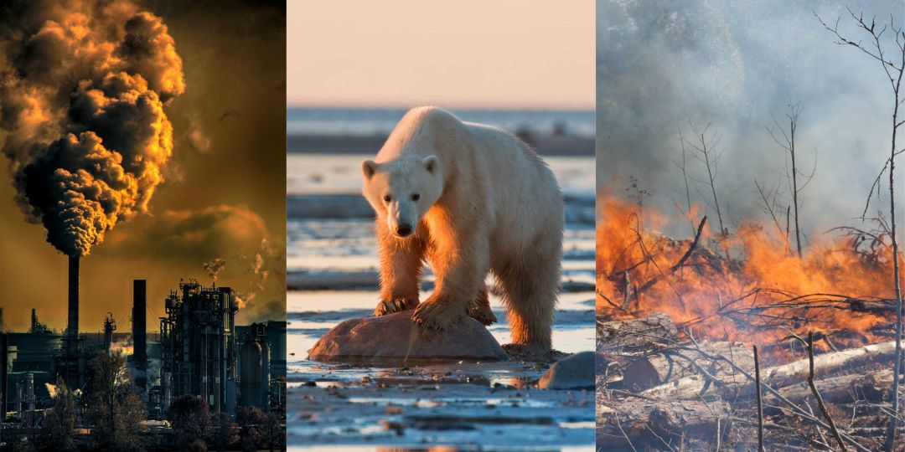

Project 7: Graphs and Findings
In my process of analyzing the data provided, I made some interesting findings which I expected. A century before my birth year( the year 1905) the mean temperature of the first half of the year being January to june was 49 degrees fahrenheit, while in 2005 it was 50 degrees fahrenheit, which would suggest that in 100 years the had been an average of a 1 degree change in temperature which aligns with current scientific consensus. The second half of the year possessed similar findings with 1905 having an average temperature of 60.4 degrees fahrenheit while 2005 had an average temperature in the second half of 61.3 degrees fahrenheit.

The second thing I decided to do was look at the temperature 10 years after my birth(2015) and check the temperature 10 years after 1905(1915) to see if this trend is consistent, I found that the average temperature in the first half of the year during 1915 was 51 degrees fahrenheit first half and 60.8 degrees fahrenheit for the later half, in comparison 2015 had an average first half temperature of 49 degrees fahrenheit but 63.2 degrees fahrenheit for the later half. This was very interesting as it seemed to suggest that winters were getting colder but summers were getting hotter.
Lastly, I decided to check the temperature during my birth month and birthday and compare it to current temperatures. As I was born on November 2, 2005 I compared the monthly temperatures to November 2, 2023. The average temperature during the month I was born was 48.1 degrees fahrenheit, unfortunately there wasn’t data available for the month of November 2023 so I used 2022 data which stated a figure of 50.2, meaning there had been a 2 temperature increase on average in 18 years.
I created a graph of the year 2022 vs 2005 since the findings for 2023 are not yet complete, the graph was made in google sheets.